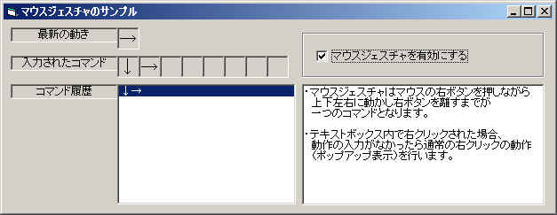

VBでマウスジェスチャ（フック）
最近Operaというブラウザを使ってるんですが、
これの「マウスジェスチャ」機能ってのがなかなかいいもので、
慣れると他のアプリにも欲しくなる機能です。（っていうか間違ってマウスをまわしちまうｗ）
ということで、VBでやってみました（＾＾；
マウスジェスチャを行うには、マウスの動きを検出する必要があります。
マウスの位置（X,Y)がどういう風に変化したかをみて判断するわけです。
VBではマウスの動きをMouseMoveイベントなどで取得することができますが、
右ボタンを押した位置のコントロールでイベントが発生するだけです。
色々なコントロールを配置したフォーム内では、
それぞれのイベントプロシジャにコードを書くのは現実的でないですし、
クラスとか使ってまとめて処理しても複雑になるだけです。
キー入力ならばKeyPreview=Trueにすればフォームで一括処理できるのですが、
マウスの場合はそれができないのも残念です。
そこでフック（Hook)というテクニックを使うことにします。
SetWindowsHookEx(ほか数点)というAPIを使って、
フォームにフックプロシジャを登録しそこでマウスの動きを取得します。
フックの仕組み
簡単にフックの仕組みを説明します。
まずWindowsというOSは「メッセージ」というものをやり取りして
マウスの動きやキー入力などをOSからアプリケーションに伝えています。
またテキストボックスやリストボックスといったシステムが用意しているコントロール
（特殊なウィンドウ）のスタイルを変更するにも、
そのウィンドウに対してメッセージを送ることにより行います。
かなり端折った説明になりますが、
マウスなどのドライバがマウスの動きを感知すると、
それをOSが用意したAPIでOSに伝え、
OSがマウスカーソルなどを移動させた後、
アプリケーションにメッセージとして送ると思えばいいでしょう。
ウィンドウには「ウィンドウプロシジャ」というモジュール（関数）が必要です。
このウィンドウプロシジャがメッセージを受け取るわけです。
VBではランタイムの中にウィンドウプロシジャがあり、
イベントとしてユーザプログラムに伝えられます。
|
OS |
→ |
VBのランタイム |
→ |
ユーザコード |
このときすべてのメッセージに対するイベントが用意されているわけではありません。
このためにVBでは出来ないことが出てくるわけです。
で、フックをかけるとどうなるかというと、
|
OS |
→ |
ユーザコード |
→ |
VBのランタイム |
→ |
ユーザコード |
OSとウィンドウプロシジャの間にユーザコードのフックプロシジャを割り込ませることができます。
これにより、ウィンドウプロシジャがOSからのメッセージを受け取る前に
自前のフックプロシジャがメッセージを受け取って、
VBでは不可能なアクションをとることが出来るわけです。
またVBのランタイムに渡すメッセージを変更してしまうことも可能です。
（実際にはデフォルトのメッセージ処理のプロシジャに飛んでたりもしますが、無視してます）
実際の使い方はこちらのサンプルをもとに説明したいと思います。
このサンプルを起動すると以下のような画面がでます。

「マウスジェスチャを有効にする」というチェックボックスをチェックするとマウスジェスチャ機能が有効になります。
マウスの右ボタンを押しながら上下左右に動かしてみましょう。
「最新の動き」「入力されたコマンド」のところに、動きにあわせた矢印がでます。
右ボタンを離すと「コマンド履歴」に登録されます。
ウィンドウの何も無いところだけでなく、テキストボックス上でも入力が可能です。
また、マウスの動きが小さい場合は反応しないようになってます。
サンプルは以下の構成になってます。
| 名称 | ファイル名 | 内容 |
| Form1 | Form1.frm | サンプルフォーム |
| mMouseHook | mMouseHook.bas | フック用モジュール |
| cMouseHookEvent | cMouseHookEvent.cls | イベント生成用クラス |
動作に沿って説明していきます。
まずサンプルプロジェクトのスタートアップがForm1になっているので
起動時にForm1がロードされます。
'マウスジェスチャのイベントを受け取るためのイベントハンドラ
Private WithEvents mMouseEvent As cMouseHookEvent
'フォームロード時
Private Sub Form_Load()
End Sub
|
モジュールセクションにcMouseHookEventクラスの変数をWithEventsを指定して定義しています。
cMouseHookEventクラスはフックには関係なく、
フックプロシジャでキャッチしたメッセージを元にマウスの動きを検知し、
イベントを起こさせるための物です。
'マウスジェスチャのＯＮ／ＯＦＦ
Private Sub chk_Enable_Click()
If chk_Enable.Value Then
'ＯＮ
Set mMouseEvent = SetHook(Me.hwnd)
Else
'ＯＦＦ
ResetHook
Set mMouseEvent = Nothing
End If
End Sub
|
「マウスジェスチャを有効にする」のチェックボックスをクリックイベントプロシジャです。
ここで上で定義したmMouseEventにcMouseHookEventクラスのインスタンスを入れています。
cMouseHookEventクラスのインスタンスを作っているのはmMouseHookモジュール内の
SetHook()関数です。
'////////////////////////////////////////////////////////////
'フック開始
Public Function SetHook(ByVal hwnd As Long) As cMouseHookEvent
'前回のフックが残っていれば解放
ResetHook
'インスタンスハンドルとスレッドIDの取得
Dim hInst&, tid&
hInst = GetWindowLong(hwnd, GWL_HINSTANCE)
If hInst = 0 Then Exit Function
tid = GetCurrentThreadId()
'フック
mHook = SetWindowsHookEx(WH_MOUSE, AddressOf HookProc, hInst, tid)
'イベントハンドラの準備
Set mHookEvent = New cMouseHookEvent
Set SetHook = mHookEvent
Debug.Print "Start hook : " + Hex$(mHook)
End Function
|
SetHook()関数ではフックをかけて、
イベントを起こさせるためのcMouseHookEventインスタンスを作成し返します。
cMouseHookEventインスタンスはフックプロシジャから呼び出すので
モジュールセクションで定義した変数に保存しておきます。
フックプロシジャを登録するAPI（）はSetWindowsHookEx()です。
これの引数は、
フックの種類
フックプロシジャのアドレス
フックプロシジャのインスタンスハンドル
フックをかけるスレッドのID
になります。
フックの種類は以下のようなものがあります。
| 定数 | フックの内容 |
| WH_MOUSE | マウス関係のメッセージをフックします。 |
| WH_KEYBOARD | キーボード関係のメッセージをフックします。 |
| WH_CBT | ComputerBasedTrainingに有効なメッセージをフックします。 ウィンドウが表示される時、アクティブになった時、ウィンドウが閉じられたときなどを検知できます。 |
| WH_CALLWNDPROC | ウィンドウプロシジャに送られるメッセージをフックします。 |
| WH_GETMESSAGE | PostMessage()APIでウィンドウプロシジャに送られたメッセージをフックします。 |
| WH_MSGFILTER | ダイアログ ボックス､ メッセージ ボックス､ メニュー､
スクロールバーを 操作したときに生成されるメッセージをフックします。 |
他にジャーナル関係、シェル関係などがあります。（詳しくはヘルプを参照してください）
今回はマウスだけなのでWH_MOUSEを使います。
フックプロシジャのアドレスはAddressOf演算子でフックプロシジャを指定すれば取得できます。
ただしAddressOf演算子で取得できる関数のアドレスは
標準モジュールにある必要があります。
このために標準モジュールが必須となります。
フックプロシジャのインスタンスハンドルと、フックをかけるスレッドのIDは
フォームのウィンドウハンドル（ｈWndプロパティ）から
GetWindowLong()、GetCurrentThreadId()のAPIを使えば取得できます。
SetWindowsHookEx()APIの戻り値はフックハンドルになります。
これはフックを解除するときに必要になるので保存しておきます。
登録されるフックプロシジャは下記になります。
'////////////////////////////////////////////////////////////
'フックプロシジャ
Private Function HookProc(ByVal nCode As Long, ByVal wParam As Long, ByVal lParam As Long) As Long
If nCode = HC_ACTION Then
If Not mHookEvent Is Nothing Then
Dim mm As tMouseHookStruct
CopyMemory mm.Point.x, ByVal lParam, LenB(mm)
If mHookEvent.FireGetMessage(wParam, mm.Point.x, mm.Point.y, mm.hwnd, mm.HitTestCode) Then
HookProc = 1
Exit Function
End If
End If
End If
HookProc = CallNextHookEx(mHook, nCode, wParam, lParam)
End Function
|
引数のnCodeにはHC_ACTION(0)又はHC_NOREMOVE(3)がセットされます。
マウスの動きを見るときはHC_ACTIONの時だけで十分です。
実際どんなメッセージが送られてきたかは、第2引数のwParamに入っています。
またマウスの位置や送られるべきウィンドウのハンドルなどは
第3引数のlParamが示すアドレス（MOUSEHOOKSTRUCT構造体のアドレス）に入っています。
VBでは直接メモリを参照できないので、
下記のように定義した構造体にコピーして参照します。
Public Type tPoint
x As Long
y As Long
End Type
Public Type tMouseHookStruct
Point As tPoint
hwnd As Long
HitTestCode As Long
ExtraInfo As Long
End Type
|
Pointにマウスの位置、ｈWndにウィンドウハンドルなどが入ってます。
例えばマウスを動かした場合、
wParamにWM_MOUSEMOVE(&H200)、
tMouseHookStructのPointにその座標(スクリーン座標)が入っていることになります。
最後のCallNextHookEx()APIは次のフックプロシジャを呼び出します。
フックプロシジャは多重に登録できます。
後で登録されたプロシジャがシステムから呼び出されますが、
そこで終わりにしないで前の（次の）フックプロシジャを呼び出してあげないと
前に登録されたフックプロシジャがなにも出来なくなる訳です。
ただ絶対呼び出さなければならない訳ではありません。
フックプロシジャで捕まえたメッセージは
イベント生成用のクラスインスタンスmHookEventのFireGetMessageに引き渡して
そこで動きの検知などをしていますが、
そこでメッセージを破棄すべき時などは戻り値に1をセットして
次のフックプロシジャを呼び出さないで帰ります。
CallNextHookExを呼び出さなければ、前に登録したフックプロシジャを無効にすることもできますが、
あまり行儀のよいプログラムとはいえないです。
（常駐してフックを行うプログラムなどで、他の同様の常駐プログラムと相性が悪いなんてのは
この辺が影響していることが多いです。）
'////////////////////////////////////////////////////////////
'フックプロシジャからの呼び出し
Public Function FireGetMessage(ByVal MsgID As Long, ByVal x As Long, ByVal y As Long, ByVal hwnd As Long, ByVal HitTestCode As Long) As Boolean
FireGetMessage = True
Dim Cancel As Boolean
Cancel = False
RaiseEvent OnGetMessage(MsgID, x, y, hwnd, HitTestCode, Cancel)
If Cancel Then
Exit Function
End If
If CheckAction(MsgID, x, y) Then
Exit Function
End If
FireGetMessage = False
End Function
'動作の検出
Private Function CheckAction(ByVal MsgID As Long, ByVal x As Long, ByVal y As Long) As Boolean
CheckAction = False
Dim dx&, dy&, dd&
Dim sx&, sy&
Select Case MsgID
Case &H200 'MOUSEMOVE
If mNowAction Then
dx = x - mLastPosX
dy = y - mLastPosY
sx = Sgn(dx)
sy = Sgn(dy)
If Sqr(dx * dx + dy * dy) > mMinMove Then
dx = Abs(dx)
dy = Abs(dy)
If dx > dy / 3 Then
sy = 0
End If
If dy > dx / 3 Then
sx = 0
End If
AddAction sx, sy
mLastPosX = x
mLastPosY = y
End If
CheckAction = True
End If
Case &H204 'RIGHTDOWN
If mMessageSkip Then
Else
mNowAction = True
mLastPosX = x
mLastPosY = y
mStartPosX = x
mStartPosY = y
mActionIndex = 0
CheckAction = True
End If
Case &H205 'RIGHTUP
If mMessageSkip Then
mMessageSkip = False
Else
mEndPosX = x
mEndPosY = y
mNowAction = False
If mActionIndex Then
RaiseEvent OnActionEnd(mActionIndex)
Else
'アクションなし
mMessageSkip = True
mouse_event MOUSEEVENTF_ABSOLUTE Or MOUSEEVENTF_RIGHTDOWN, mStartPosX, mStartPosY, 0, 0
mouse_event MOUSEEVENTF_ABSOLUTE Or MOUSEEVENTF_RIGHTUP, mEndPosX, mEndPosY, 0, 0
End If
End If
End Select
End Function
|
いきなり長いですが、上がフックプロシジャからメッセージを受け取って
マウスの動きを検知している所です。
フックプロシジャから直接呼び出されるFireGetMessageは
OnGetMessageイベントを発生させてますが、サンプルでは使ってません。
マウスジェスチャの開始は右ボタンが押下されたときから始まります。
右ボタンが押下されたときはMsgIDが&H204(WM_RBUTTONDOWN)になります(緑の部分)。
移動量を測るためのメンバ変数にクリックされたときの位置を保存し
ジェスチャ中であることを示す変数（mNowAction）をセットしています。
そしてそのメッセージは無視させるように戻り値をTrueにします。
これによりこのメッセージはVBに渡りません。（MouseDownイベントが発生しない）
またmMessageSkipがTrueの時は処理しません。（後述）
マウスが動かされたときはMsgIDが&H200(WM_MOUSEMOVE)になります(青の部分)。
ジェスチャ中(mNowAction=TRUE)であるときだけ動きの検知を行います。
実は動きの検知は結構いい加減です（^^;
（１）
移動距離(左右、前後の増減分の二乗を加えた値の平方根)が
最低移動距離mMinMoveより大きいかを調べ、
最低移動距離以下の場合は無視します。
（２）
横の移動量が縦の移動量の３倍よりも大きい場合、縦の移動量は０とします。
縦の移動量が横の移動量の３倍よりも大きい場合、横の移動量は０とします。
これにより斜めの移動は移動量０となります。（大概ね）
（３）
縦、横の移動量から方向を求めます。
縦、横の移動量とも０（＝斜めの時）ならば無視します。
検知はこれだけです。
動きがあると判断されたときはAddAction関数内でアクションバッファに登録し、
OnActionStart／OnActionMoveイベントを発生させます。
マウスの右ボタンが離されたときはMsgIDが&H205(WM_RBUTTONUP)になります(黄色の部分)。
ここでもmMessageSkip=Trueの時はmMessageSkipをクリアするだけです。
アクションバッファにデータがあれば(mActionIndex>0の時)、
なんらかの動きがあったのでOnActionEndイベントを発生させます。
バッファにデータがない場合、アクションがなかったので
通常の右クリック処理を起こさせます。
右クリック処理はmouse_event()APIで右ボタン押す→右ボタン離すをさせることで実現してます。
このとき自分自身にLBUTTONDOWN／LBUTTONUPがまた発生してしまいます。
そのメッセージは無視するようにmMessageSkipをTrueにします。
動きがなかったときに右クリックを起こさせるのは
テキストボックスなどで右クリックメニューを通常と同じように起こさせる為です。
これをやらないとフック中はテキストボックスでポップアップメニュがでなくなってしまいます。
以上でcMouseHookEventのインスタンスmMouseEventをWithEventsで宣言したForm1内で
mMouseEvent_OnActionStart：最初のアクションの時
mMouseEvent_OnActionMove：新しい動きがあった時
mMouseEvent_OnActionEnd：アクションが終わった時
のイベントが発生します。
通常はmMouseEvent_OnActionEndイベントプロシジャ内で
ActionMoveプロパティの中身をみて処理を行います。
なおフックを終了するときは
'フック解除
Public Sub ResetHook()
If mHook Then
UnhookWindowsHookEx mHook
mHook = 0
Set mHookEvent = Nothing
Debug.Print "End hook"
End If
End Sub
|
ResetHook（）関数を呼び出します。
この中でフックプロシジャを解除するUnhookWindowsHookEx()APIを呼び出してます。
マウスジェスチャの説明というよりフックの説明でした(＾＾；
ちなみにSetWindowsHookExによるフックではなく、
いわゆる「サブクラス化」では子ウィンドウのメッセージを簡単に取得できないので
こういう場合はフックを使った方がいいかと思います。（適材適所）
フックにはもう一つ大事なことがあります。
フックプロシジャは自プロセスのウィンドウ（スレッド）だけでなく、
他のプロセスのウィンドウ（スレッド）に登録することができるのです。
また特定のプロセスではなく、全プロセスにフックをかけることもできます。
これは「グローバルフック（またはシステムフック）」と呼ばれます。
今回使用したのは自分自身のウィンドウにフックをかけた「ローカルフック」というものです。
グローバルフックをすると、面白いことができます。
他のプロセス（プログラム）でのキー入力や
別プログラムがアクティブになった瞬間などを取得することもできます。
ゲームの画面で特定のキーを１つ押すだけで複数の入力を行ったようにしたり、
あるプログラムで特定の画面を出した瞬間になにかをするとかができます。
私も愛用させていただいている「どこでもホイール」のようなこともできます。
（おそらくどこでもホイールはフックでやっているかと思われます）
ただし、VBでは無理です（＾＾；
グローバルフックを行うときは、フックプロシジャをDLL内におかなければなりません。
（すべてのプロセス空間にロードされる為です）
VBではActiveXDLLを作成することはできますが、
フックプロシジャを入れる純粋なDLLを作成することが出来ないためです。
ちょっと残念ですよね～